Use Case
AWS Lambda along with other services provides a serverless way of doing things where we don’t need to think about servers. So, we don’t need to think about auto scaling, capacity planning and high availability. This allows to focus more on the business and the customers instead of worrying about the infrastructure.
But, Serverless has got its own challenges, there are no servers where can connect to and get the log files. So, AWS provides the CloudWatch logs where are the log files would be written to. But, as the number of log messages increase it becomes difficult to filter out the error message and figure out the exact problem. So, AWS provides ElasticSearch for indexing, visualization and alarms around the log files. But, for small application with only a few Lambda functions and with only a few Lambda invocations, setting up and maintaining ElasticSearch would be an over burden.
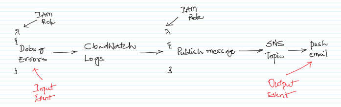
One easy solution is to invoke another Lambda function for the new CloudWatch log error and warning messages which would send an email notification via email. In this scenario, an error or warning in the Lambda is the input event, getting notified via email is the output event.
This approach makes it easy to get notified when any problems with the Lambda execution and is also to setup. Also, we don’t need to think about the servers in the entire scenario.
AWS Services: Lambda, IAM, CloudWatch, SNS
-- Navigate to the SNS Management console and click on `Creta topic`.
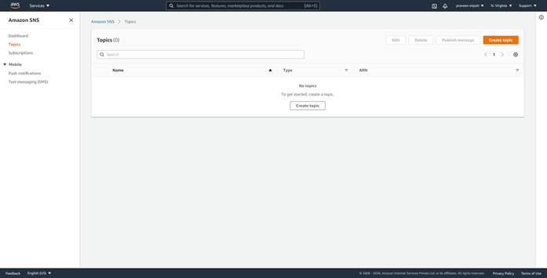
-- Give the SNS Topic the `LambdaErrorNotificationTopic` name and click on `Create topic`.
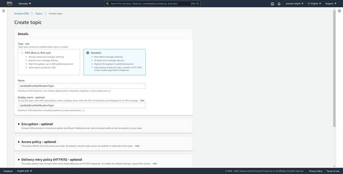
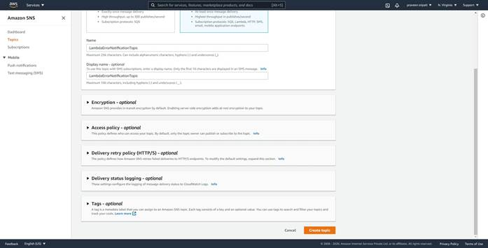
-- The Topic should be created as shown below. Click on `Create subscription`.
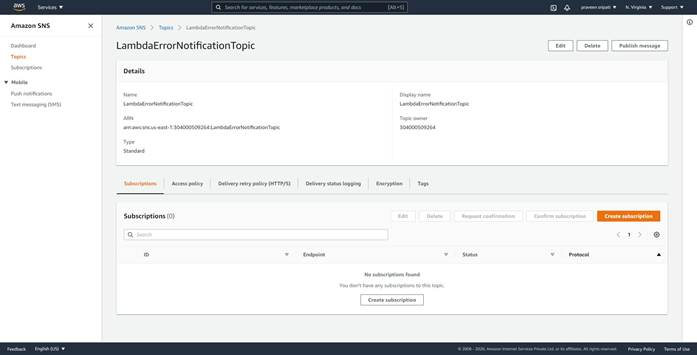
-- Select Email for the Protocol and enter the email address. Click on `Create subscription`.
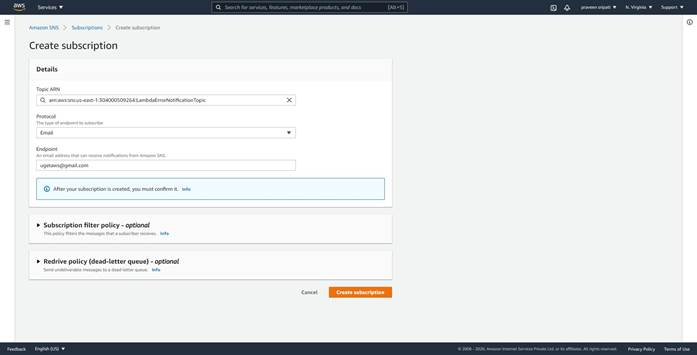
-- Initial the Subscription would be in a `Pending confirmation` status.
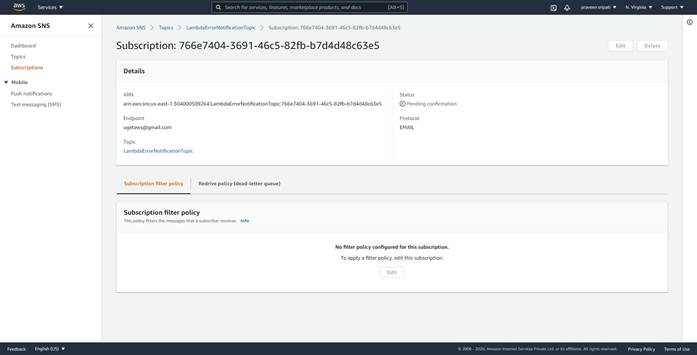
-- There would be an email with a link from SNS. Click on `Confirm subscription`.
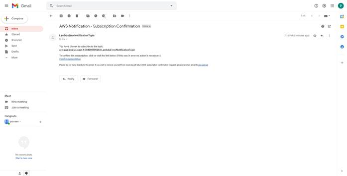
-- The status of the subscription would be changed to Confirmed as shown below.

-- Navigate to the IAM Management Console, select the Roles tab. Click on `Create role`.
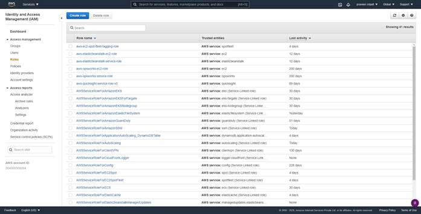
-- Select Lambda as the service and click on `Next Permissions`.
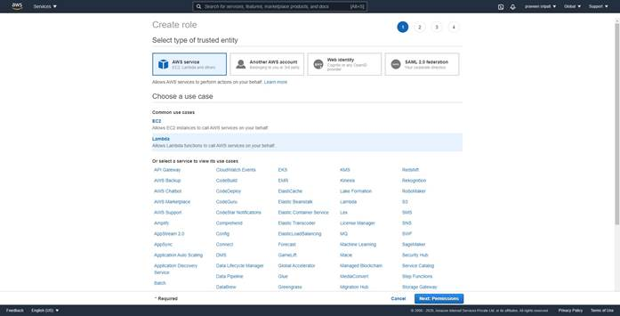
-- Select `AWSLambdaBasicExecutionRole` and click on `Next Tags`.
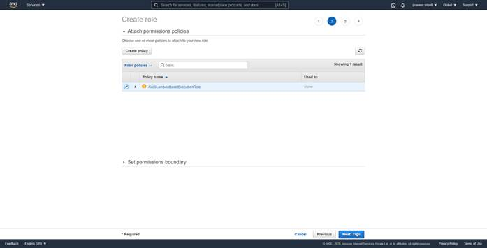
-- Tags are options, click on `Next Review`.
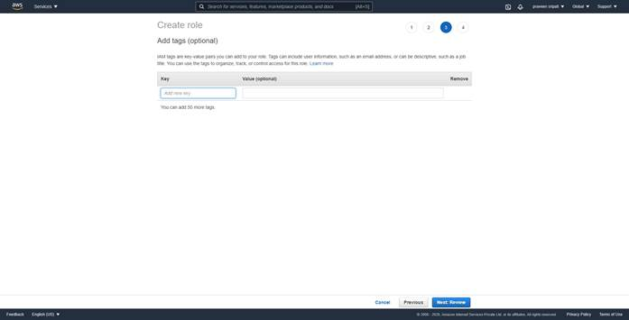
-- Give the Lambda Role the name `Role4Lambda-BasicExecution` and click on `Create role`.
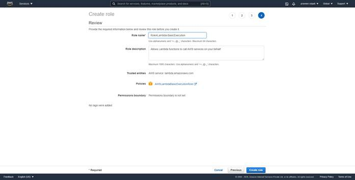
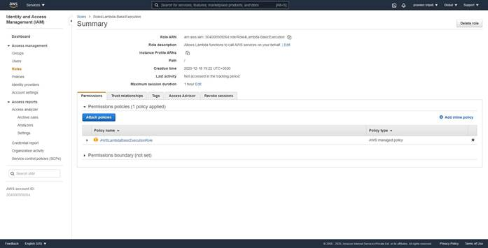
-- Along the same lines create another Role called `Role4Lambda-SNS-FA` and attach `AWSLambdaBasicExecutionRole` and `AmazonSNSFullAccess` policies as shown below.
-- Navigate to the Lambda Management Console and click on `Create Function`.
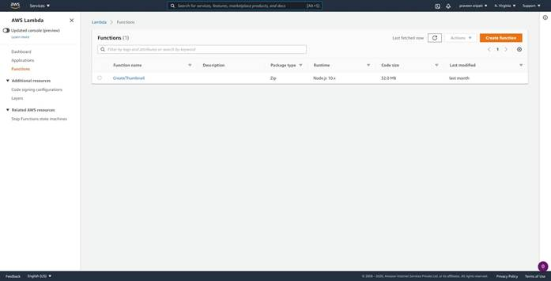
-- Give the Function a name `LambdaGenerateErrors`. Select Python 3.7 as the platform. Select the `Role4Lambda-BasicExecution` IAM Role created earlier. Click on `Create Function`.
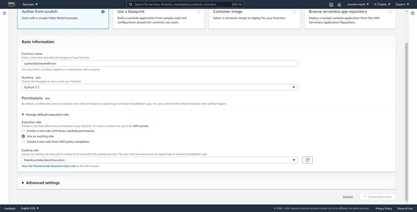
-- Replace the code with the below code and click on Deploy.
import logging
import os
logging.basicConfig(level=logging.DEBUG)
logger=logging.getLogger(__name__)
def lambda_handler(event, context):
logger.setLevel(logging.DEBUG)
logger.debug("This is a sample DEBUG message.. !!")
logger.error("This is a sample ERROR message.... !!")
logger.info("This is a sample INFO message.. !!")
logger.critical("This is a sample 5xx error message.. !!")
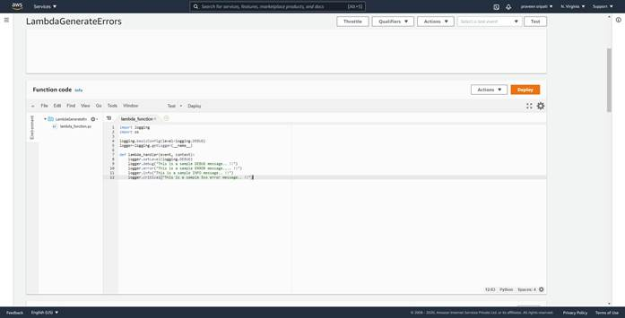
-- In the same screen click on `Test`. Give a name and click on `Create`.
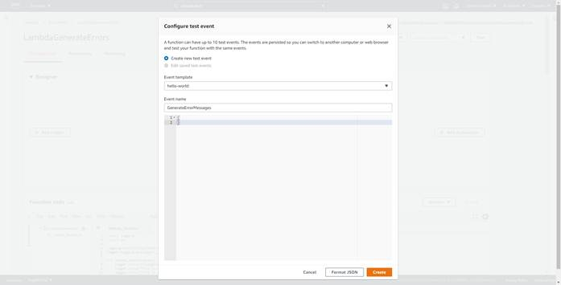
-- Click on Test again to invoke the Lambda function. The Lambda function should be Executed successfully and the messages should be displayed as shown below.
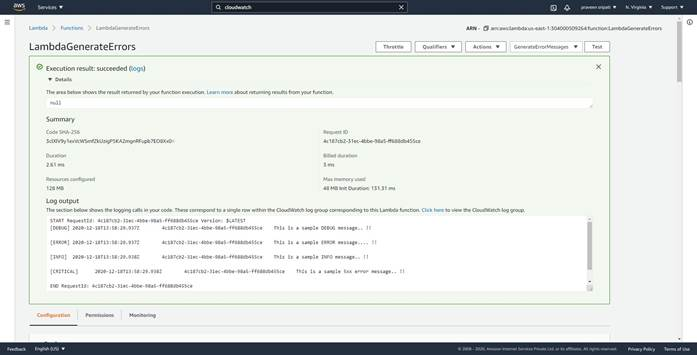
-- Also, all the log messages from the Lambda code execution should be displayed in the CloudWatch logs.
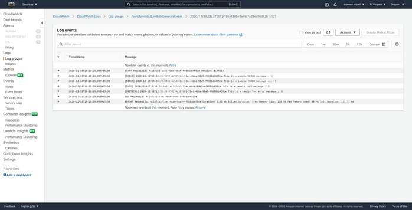
-- Go back to the Lambda Management Console and click on `Create Function`.
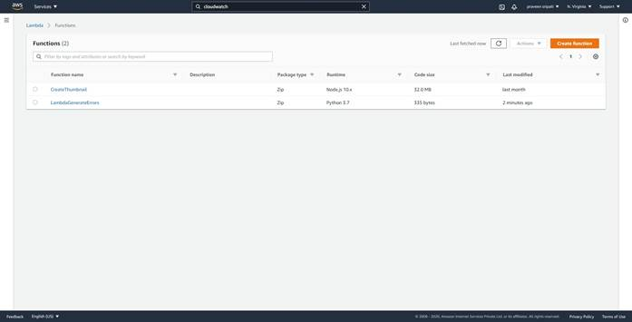
-- Enter the Lambda Function name as `LambdaCheckForErrorsAndNotify`. Select the platform as Python 3.7 and select the `Role4Lambda-SNS-FA` Role created earlier. Click on `Create Function`.
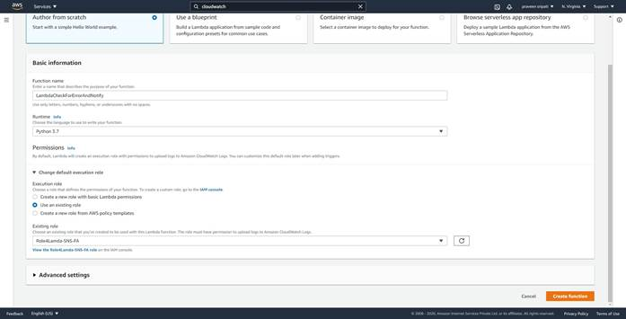
-- Replace the Lambda code with the below and make sure to replace the SNS Topic ARN. Click on Deploy.
import boto3
import logging
from botocore.exceptions import ClientError
def lambda_handler(event, context):
sns_arn = "arn:aws:sns:us-east-1:304000509264:MyDemoTopic"
snsclient = boto3.client('sns')
try:
message = "Error in the Lambda Function -- lambda_generating_errors"
# Sending the notification...
snsclient.publish(
TargetArn=sns_arn,
Subject=f'Execution error for Lambda',
Message=message
)
except ClientError as e:
logger.error("An error occured: %s" % e)
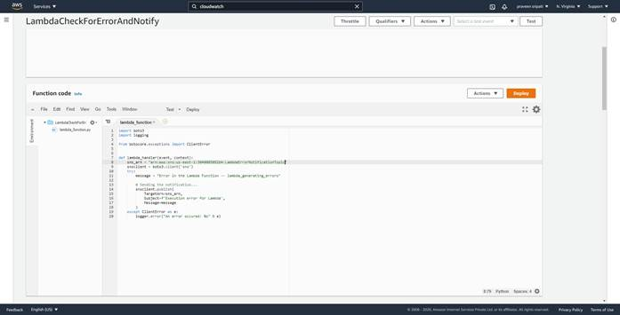
-- Click on `Add Trigger`.
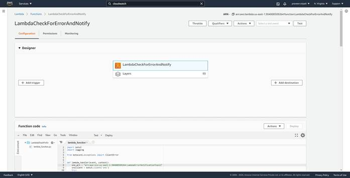
-- Select `CloudWatch Logs` for the service. Select the Log Group, give the filter a name and for the filter pattern enter `?WARN ?5xx ?ERROR`. Click on Add.
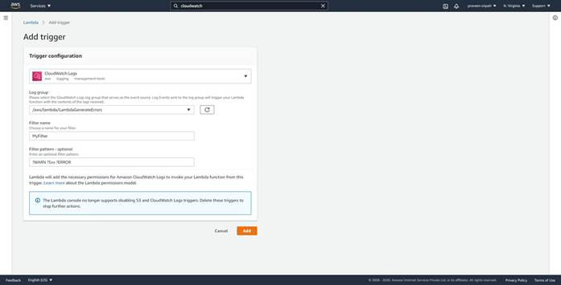
-- Navigate to the Lambda Management Console and to the LambdaCheckForErrorAndNotify function. Click on Test to simulate error messages.
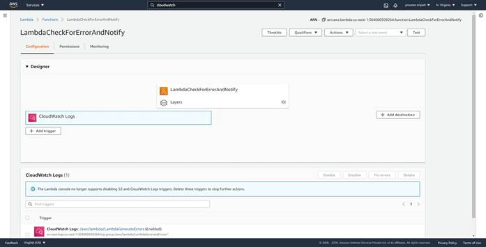
-- Check the email and there should be one notifying that there had been errors in the Lambda execution.
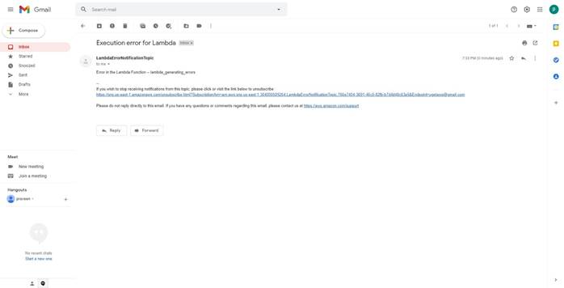